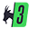
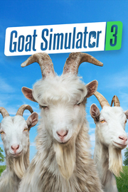

 Goat Simulator 3
Detalles
|  | |
| Tiempo de juego | No Jugado |
| Última actividad | Nunca |
| Añadido | 11/6/2024 15:35:16 |
| Modificado | 11/8/2024 12:00:37 |
| Estado de finalización | No Jugado |
| Librería | Playnite |
| Fuente | 2TB GAS |
| Plataforma | PC (Windows) |
| Fecha de lanzamiento | 2/15/2024 |
| Puntuación de la Comunidad | 94 |
| Puntuación de la Crítica | |
| Puntuación de usuario | |
| Género | Aventura Casual Simuladores |
| Desarrollador | Coffee Stain North |
| Editor | Coffee Stain Publishing |
| Característica | Cloud Saves Compat. Total Con Mando Coop. A Pantalla (Com)Partida Cooperativo Cooperativo En Línea Cromos De Logros De Multijugador Pantalla Partida/Compartida Préstamo Familiar Subtítulos Disponibles Un Jugador |
| Enlaces | Punto de encuentro Discusiones Guías Noticias Página de la tienda PCGamingWiki Logros |
| Tag | 3D Acción y aventura Aventura Caricaturescos Casuales Coloridos Comedia Cooperativos Cooperativos en línea Cooperativos locales Exploración Física Multijugador Multijugador local Mundo abierto Para toda la familia Personalización de personajes Sandbox Simulación Un jugador |
Descripción
¡Pilgor está de vuelta! ¡Toma a la vida por los cuernos hoy en Goat Simulator 3!
Reúne a tu rebaño y aventúrate en Goat Simulator 3, una nueva*, realista** y granjera*** experiencia de sandbox que te pone en las pezuñas de la protagonista femenina favorita de nadie.
Únete a Pilgor y prepárate para crear tu propia aventura vertiginosa en la isla de San Angora. ¡Destroza todo a tu paso a base de cabezazos y lengüetazos en un mundo abierto mientras pierdes el tiempo de nuevo como en el Goat Simulator original! No te diremos cómo jugar (excepto en el tutorial); solo te daremos lo que necesitas para ser la cabra de tus sueños.

¡Con que sueñes con más de una cabra, nos basta! Con el modo cooperativo local o en línea de Goat Simulator 3 podrás invitar a hasta tres amigos para sembrar el caos como equipo, o competir entre sí en los minijuegos hasta dejar de serlo. Y no te preocupes: hay un sinfín de opciones de personalización para que tus amigos y tú lleven atuendos a juego.

Goat Simulator 3 se lanzó por primera vez en noviembre del 2022 y, desde entonces, nuestros ""diseñadores de juego"" han trabajado duro para agregar aún más cosas raras y estupendas. Además del contenido caprino original, los jugadores de Steam podrán jugar todo el contenido de las actualizaciones implementadas después del lanzamiento del juego, como la actualización obligatoria de Navidad , la operación Rompehuevos y la actualización A la sombra. ¡Y hay mucho más en camino!

CARACTERÍSTICAS IMPORTANTES:
- Puedes ser una cabra
- Puedes ser una cabra... ¡en Steam!
- Tres de tus amigos también pueden ser cabras para juntarse en el modo cooperativo local o en línea
- Ya en serio, hay muchas cabras. Si quieres un aspecto sofisticado puedes ser una cabra alta, una cabra a rayas o muchas más. ¡Hay una cabra para todos!
- Viste a tu cabra con cualquier cosa, desde rollos de papel higiénico hasta bandejas de té. Si quieres, puedes incluso llevar un jetpack.
- Contamos con ""diseñadores de juegos"" reales que han trabajado para crear ""una cantidad de contenido aceptable"", incluyendo eventos, PNJ para molestar, física, efectos de estado, coleccionables, huevos de Pascua, mentiras, traición, desamor.
- También añadieron varios minijuegos (siete es bastante, ¿no?)
- Añadieron un montón de contenido adicional desde que el juego se lanzó. Qué suerte tienen algunos, ¿verdad?

AVISO LEGAL:
Desde su lanzamiento en noviembre de 2022, Goat Simulator 3 ha sido un juego completamente absurdo. Hoy día sigue siendo un juego absurdo, ¡solo que ahora tiene más cosas! A estas alturas si no sabes en lo que te estás metiendo, no podemos ayudarte.
NOTAS:
* Goat Simulator 3, técnicamente, no es del todo nuevo, ¡pero lo es para los usuarios de Steam!
** Nuestro juego es bastante realista, si por casualidad eres una cabra digital propensa a recibir golpes.
*** Falsa alarma, esto sí es de verdad.
Reúne a tu rebaño y aventúrate en Goat Simulator 3, una nueva*, realista** y granjera*** experiencia de sandbox que te pone en las pezuñas de la protagonista femenina favorita de nadie.
Únete a Pilgor y prepárate para crear tu propia aventura vertiginosa en la isla de San Angora. ¡Destroza todo a tu paso a base de cabezazos y lengüetazos en un mundo abierto mientras pierdes el tiempo de nuevo como en el Goat Simulator original! No te diremos cómo jugar (excepto en el tutorial); solo te daremos lo que necesitas para ser la cabra de tus sueños.
¡Con que sueñes con más de una cabra, nos basta! Con el modo cooperativo local o en línea de Goat Simulator 3 podrás invitar a hasta tres amigos para sembrar el caos como equipo, o competir entre sí en los minijuegos hasta dejar de serlo. Y no te preocupes: hay un sinfín de opciones de personalización para que tus amigos y tú lleven atuendos a juego.
Goat Simulator 3 se lanzó por primera vez en noviembre del 2022 y, desde entonces, nuestros ""diseñadores de juego"" han trabajado duro para agregar aún más cosas raras y estupendas. Además del contenido caprino original, los jugadores de Steam podrán jugar todo el contenido de las actualizaciones implementadas después del lanzamiento del juego, como la actualización obligatoria de Navidad , la operación Rompehuevos y la actualización A la sombra. ¡Y hay mucho más en camino!
CARACTERÍSTICAS IMPORTANTES:
- Puedes ser una cabra
- Puedes ser una cabra... ¡en Steam!
- Tres de tus amigos también pueden ser cabras para juntarse en el modo cooperativo local o en línea
- Ya en serio, hay muchas cabras. Si quieres un aspecto sofisticado puedes ser una cabra alta, una cabra a rayas o muchas más. ¡Hay una cabra para todos!
- Viste a tu cabra con cualquier cosa, desde rollos de papel higiénico hasta bandejas de té. Si quieres, puedes incluso llevar un jetpack.
- Contamos con ""diseñadores de juegos"" reales que han trabajado para crear ""una cantidad de contenido aceptable"", incluyendo eventos, PNJ para molestar, física, efectos de estado, coleccionables, huevos de Pascua, mentiras, traición, desamor.
- También añadieron varios minijuegos (siete es bastante, ¿no?)
- Añadieron un montón de contenido adicional desde que el juego se lanzó. Qué suerte tienen algunos, ¿verdad?
AVISO LEGAL:
Desde su lanzamiento en noviembre de 2022, Goat Simulator 3 ha sido un juego completamente absurdo. Hoy día sigue siendo un juego absurdo, ¡solo que ahora tiene más cosas! A estas alturas si no sabes en lo que te estás metiendo, no podemos ayudarte.
NOTAS:
* Goat Simulator 3, técnicamente, no es del todo nuevo, ¡pero lo es para los usuarios de Steam!
** Nuestro juego es bastante realista, si por casualidad eres una cabra digital propensa a recibir golpes.
*** Falsa alarma, esto sí es de verdad.